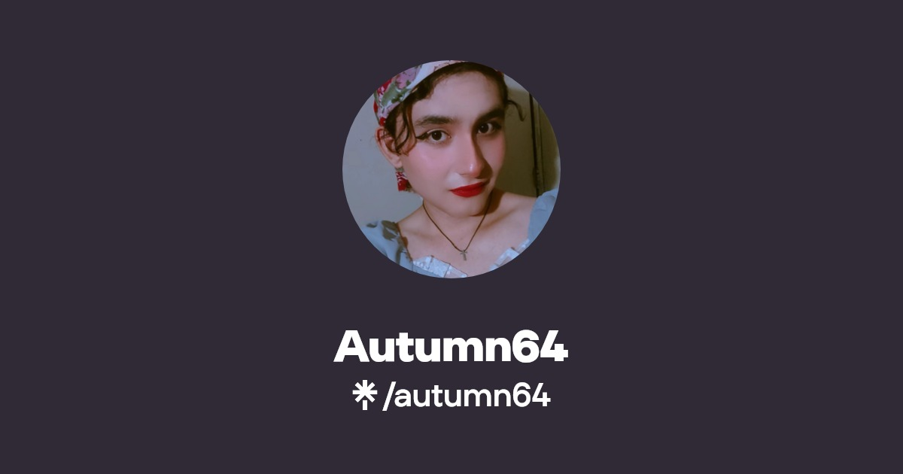

This website needs JS to work properly.
Source code
English
Español
Esperanto
FOSS activism
I sometimes upload long and short videos about Free Software and GNU/Linux.
Featured long video (in Spanish)
Featured short video (in Spanish)
Follow me on my social media
